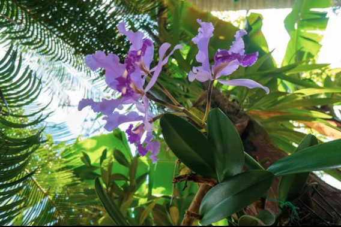
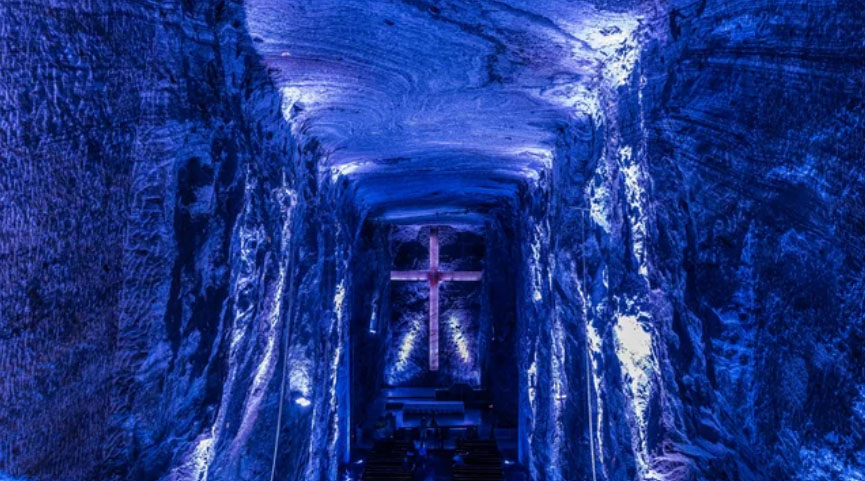
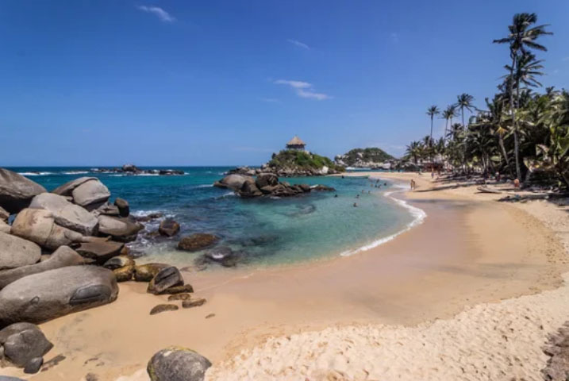
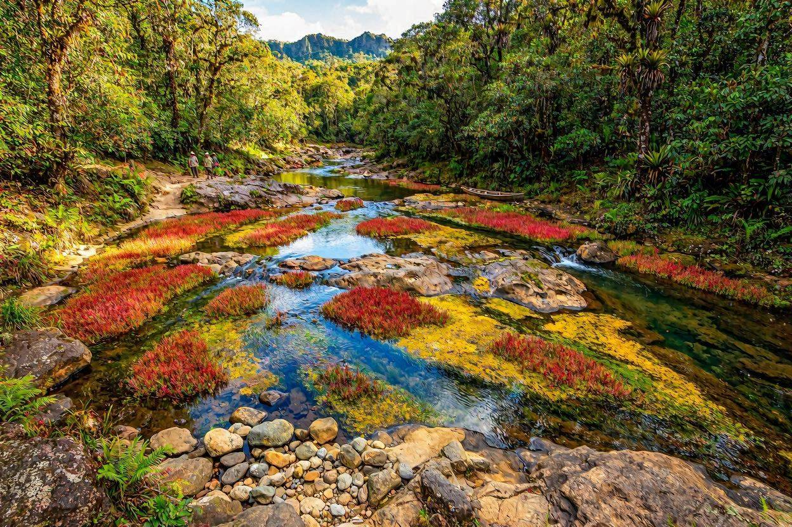
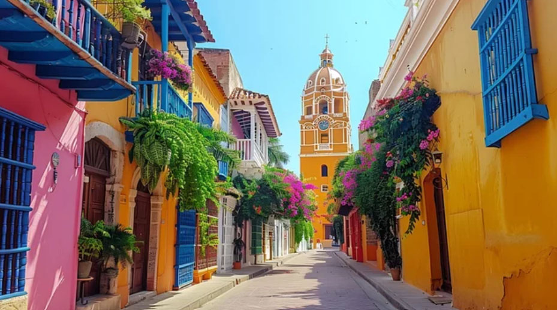
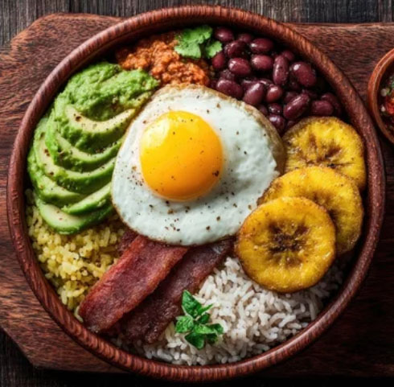

WELCOME TO COLOMBIA
Enchanting Colombia: A Land of Magic
From the peaks of the Andes to the turquoise waters of the Caribbean. A South American gem where passionate rhythms and colorful history come alive. An experience that exceeds your imagination awaits.
Nature's Hidden Wonders
Iconic Landmarks
From the rainbow waters of Caño Cristales and the pristine shores of Tayrona to the awe-inspiring Salt Cathedral carved beneath the earth, discover Colombia's extraordinary landscapes shaped by nature, history, and wonder.

Salt Cathedral of Zipaquirá
Carved deep within a former salt mine, this magnificent underground cathedral is a masterpiece of faith, architecture, and human ingenuity.

Tayrona National Park
Golden beaches, lush rainforests, and crystal-clear Caribbean waters come together in Tayrona, one of Colombia's most breathtaking natural treasures.

Caño Cristales
Known as the "River of Five Colors," Caño Cristales dazzles visitors with vibrant hues created by unique aquatic plants, making it one of Colombia's most extraordinary natural wonders.
Cities Full of Character
Cities of Distinction
From vibrant cultural centers and innovative urban spaces to colorful colonial streets by the Caribbean Sea, Colombia's cities offer a captivating blend of history, creativity, and modern life.

Bogotá
Perched high in the Andes, Bogotá is a cultural powerhouse blending world-class museums, sophisticated dining, and the historic charm of La Candelaria.

Medellín
Renowned for its innovative urban design and spring-like weather year-round, Medellín captivates visitors with its flower festivals and vibrant Comuna 13 art.

Cartagena
Where pastel history dances to the beat of Afro-Brazilian drums. Experience the colorful soul of Bahia and the warm embrace of the Atlantic.
Flavors of Tradition
From the Andes to the Caribbean coast, Colombia's cuisine celebrates a colorful blend of cultures, fresh ingredients, and time-honored recipes passed down through generations.

Arepa de Huevo
A treasure of the Caribbean coast. An irresistible snack featuring a whole egg fried inside a crispy corn pocket.

Ajiaco
A beloved Colombian Traditional Chicken Soup made with tender chicken, three kinds of potatoes, corn, and aromatic herbs. Rich, comforting, and traditionally served with cream, capers, and avocado.

Bandeja Paisa
Originating from the Medellin region, this iconic dish was traditionally served to provide laborers with enough energy for a full day of hard work in the fields.
コロンビア共和国の歴史
Republic of Colombia
Colombia's history is marked by advanced indigenous civilizations, Spanish conquest, independence led by Simón Bolívar, and the struggles of the 20th century, including La Violencia and conflicts with powerful drug cartels. Today, the nation continues its journey toward peace and economic prosperity.
古代・先植民地期
チブチャ系文化の繁栄（紀元前4千年紀～）
高度な黄金細工技術を持つムイスカ族（チブチャ系）などの先住民族がアンデス高地で繁栄。これがのちにヨーロッパ人が追い求めた「エル・ドラード（黄金郷）伝説」の起源となる。
近世（植民地時代）
スペインによる征服（1500年頃～）
スペイン人が次々と侵攻。1525年にサンタ・マルタ、1533年にカルタヘナ、1538年にサンタフェ・デ・ボゴタ（現在のボゴタ）を建設。
新グラナダ副王領の設置（1717年）
南米北部の行政の中心地となり、金鉱山やサトウキビのプランテーションが発展。労働力として西アフリカから多くの黒人奴隷が連行される。
近代（独立と大コロンビア）
独立運動とボリバルの活躍（1810年～）
1810年にボゴタで自治政府が樹立され、独立運動が本格化。「解放者」シモン・ボリバルが1819年のボヤカの戦いでスペイン軍に決定的な勝利を収める。
大コロンビア共和国の誕生（1819年～1830年）
現在のコロンビア、ベネズエラ、エクアドル、パナマを包括する巨大国家が誕生。しかし、政治的対立から1830年に瓦解。
内戦とパナマの分離（19世紀末～20世紀初頭）
1886年 憲法制定、コロンビア共和国成立
自由党と保守派の対立から「千日戦争（1899年〜1902年）」と呼ばれる凄惨な内戦が勃発。国内の混乱に乗じた米国の介入により、1903年にパナマが分離独立。
近現代（「暴力の時代」と麻薬カルテル）
「ラ・ビオレンシア（暴力の時代）」（1948年～1958年）
自由党の指導者ガイタンの暗殺（ボゴタ暴動）(1948年)を機に、全国で凄惨な武装衝突が勃発。20万人以上が犠牲となり、これがのちの左翼ゲリラ結成の引き金となる。
左翼ゲリラの台頭と麻薬の蔓延（1960年代～1990年代）
コロンビア革命軍（FARC）などの左翼ゲリラが結成され、政府軍との内戦が泥沼化。1980年代にはパブロ・エスコバル率いる「メデジン・カルテル」などの巨大麻薬組織が台頭し、テロや暗殺が多発して国家の存続が脅かされる。
現代
歴史的な和平と再生（2000年代～現在）
ウリベ政権による強硬な治安対策でカルテルやゲリラが弱体化。2016年にサントス大統領が最大ゲリラ組織FARCとの歴史的な和平合意を実現し、ノーベル平和賞を受賞。
現代のコロンビア
治安が劇的に改善したことで、豊かな自然や良質なコーヒー、カルタヘナなどの世界遺産を活かした観光業が急成長。近年は南米屈指の経済成長を遂げる国として注目されている。
「二大政党の泥沼の暴力」から「一時的な休戦（軍事政権・国民戦線）」、そして「多様性と平和を模索する現代の民主化」へと至る、国家再建のプロセス
全体の流れをわかりやすく3つのステップで解説します。
1. 1953年：ロハス軍事政権の発足（～1957年）
背景と理由：泥沼の「暴力の時代」を止めるためのクーデター
背景（ラ・ビオレンシア）： 1948年に自由党の有力政治家が暗殺されたことを契機に、コロンビアでは「自由党」と「保守党」の支持者同士が血で血を洗う内戦状態（ラ・ビオレンシア＝暴力の時代）に陥りました。死者は数十万人に達し、政治は完全に機能不全となりました。
軍事政権の発足： この混沌を鎮めるため、両党の支配層や軍部から期待を集める形で、グスタボ・ロハス・ピニージャ将軍が1953年に無血クーデターを起こし、軍事政権を発足させました。
結果： ロハスはインフラ整備や女性参政権の導入などを行い、一時的に治安を回復させましたが、次第に独裁色を強めたため、わずか4年で失脚しました。
2. 1958年：国民戦線協定の成立（～1974年）
背景と理由：二大政党の「政権交代ルール化」による民政移管
背景： 独裁政権（ロハス）の誕生に危機感を覚えた「自由党」と「保守党」は、お互いに殺し合うのをやめ、協力して政治を安定させるための大妥協に達しました。
仕組み（国民戦線体制）： 「大統領職を自由党と保守党で4年ごとに交互に交代する」、さらに「議席や閣僚ポストを両党で完全に折半（50%ずつ）にする」という極めて異例の協定を結び、民政に復帰しました。
結果： これにより伝統的な二大政党間の暴力は終息し、政治的安定をもたらしました。しかし、「この2つの党以外の政治参加を排除する」仕組みだったため、排除された左派や農民が不満を募らせ、1960年代にコロンビア革命軍（FARC）などの左翼ゲリラが誕生する原因（新たな内戦の火種）を作ってしまいました。
3. 1991年：新憲法の制定
背景と理由：排他的な政治を壊し、麻薬・ゲリラ問題に対抗する多文化民主化
背景： 1974年に国民戦線が終了した後も、1886年に作られた古い中央集権的な憲法（保守・自由の二大政党優位、カトリック国教化）が使われ続けていました。しかし1980年代になると、左翼ゲリラや極右民兵に加え、巨大な「麻薬カルテル（メデジン・カルテルなど）」によるテロや暗殺が多発し、国は再び崩壊の危機に瀕します。
新憲法の制定： 危機感を抱いた国民や若者、ゲリラから合法政党に転向した勢力などが「政治の仕組みを根本から変えよう」と声を上げ、1991年に105年ぶりとなる憲法の全面改定が行われました。
内容と意義： 新憲法では、信教の自由（カトリックの特権廃止）、先住民族やアフリカ系住民の権利擁護、二大政党以外も参政しやすくなる仕組みなどが盛り込まれました。「排他的だったコロンビア政治」を「多様性を認める真の民主主義国家」へと生まれ変わらせた歴史的転換点です。
国家再建の意味とは
1940年代〜1950年代のコロンビアが、単なる政治の混乱を超えて、国家の仕組みそのものが完全に崩壊（機能不全）しました。
なぜそこまで深刻だったのか、具体的な「崩壊」の理由は以下の3点です。
1. 政府が機能せず「無法地帯」になった
「ラ・ビオレンシア（暴力の時代）」の間、警察や裁判所、地方政府までもが「自由党派」と「保守党派」に分裂して殺し合いました。国家が国民の命を守るという、一番基本的な役割を果たせなくなっていたのです。
2. 社会のルール（憲法・法律）が無視された
当時の憲法や法律はまったく機能せず、大統領の暗殺未遂や、政敵の虐殺が日常化していました。法律に基づく「法治国家」としての土台が、完全に崩れていました。
3. 国民の団結が完全に失われた
国民が同じ国の仲間として暮らすのではなく、「相手の党の人間は子供でも殺す」という極限の憎悪で分断されていました。国家のコミュニティそのものがバラバラになっていたのです。
1953年以降の動きは、単に「新しい大統領を決める」というレベルの話ではありませんでした。「崩壊した国家を、土台からもう一度組み立て直すプロセス」だったため、「国家再建」という言葉が最も適しています。